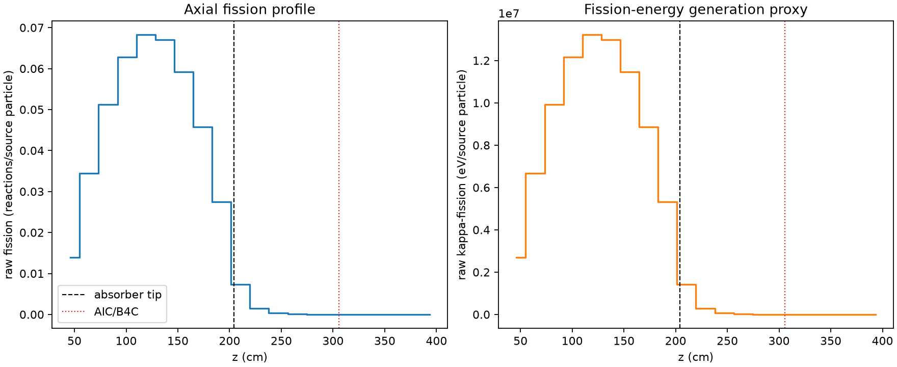
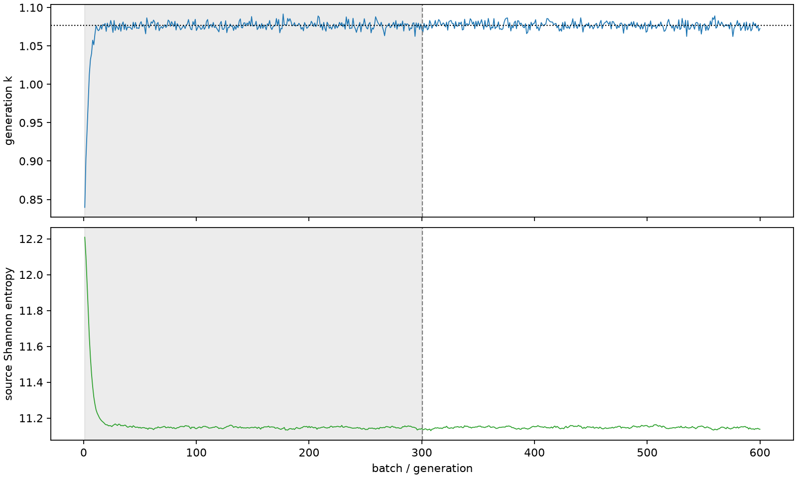

| field | value |
|---|---|
| experiment | V2-STAGE_128_OGRENCI_02-0012 |
| k | 1.0770377711422163 |
| MC standard error | 0.00017983448768433245 |
| seconds | 1041.7165784890003 |
| acceptance | not_assessed |
| convergence | review_required |
Completed is output integrity only; physical and statistical review required. Zero tallies do not prove zero production or zero uncertainty.
| diagnostic | value |
|---|---|
| geometric fuel voxels | 5280 |
| zero fission tally voxels | 979 |
| low signal fuel voxels | 1850 |
| low signal fission share | 5.534681501975336e-05 |
| low signal kappa share | 5.536438544373805e-05 |
| important fission share | 0.9501202480016271 |
| previous filter included | 3430 |
| duration estimate s | 1562.5173488400023 |
| actual minus estimate s | -520.800770351002 |
| fission relative MC error | statistics |
|---|---|
| all_geometric_fuel | {"voxels": 5280, "positive_mean_voxels": 4301, "zero_mean_voxels": 979, "undefined_relative_error_voxels": 979, "median": 0.011816183523276758, "p95": 0.961735586809444, "maximum": 1.0000000000000002} |
| low_signal | {"voxels": 1850, "positive_mean_voxels": 871, "zero_mean_voxels": 979, "undefined_relative_error_voxels": 979, "median": 0.5965006814286258, "p95": 1.0, "maximum": 1.0000000000000002} |
| important_95pct | {"voxels": 2134, "positive_mean_voxels": 2134, "zero_mean_voxels": 0, "undefined_relative_error_voxels": 0, "median": 0.006411169864289138, "p95": 0.009168789101502713, "maximum": 0.013054441138769277} |
| outside_previous_filter | {"voxels": 1850, "positive_mean_voxels": 871, "zero_mean_voxels": 979, "undefined_relative_error_voxels": 979, "median": 0.5965006814286258, "p95": 1.0, "maximum": 1.0000000000000002} |
| kappa_fission relative MC error | statistics |
|---|---|
| all_geometric_fuel | {"voxels": 5280, "positive_mean_voxels": 4301, "zero_mean_voxels": 979, "undefined_relative_error_voxels": 979, "median": 0.011801116296613769, "p95": 0.9617331862777625, "maximum": 1.0000000000000002} |
| low_signal | {"voxels": 1850, "positive_mean_voxels": 871, "zero_mean_voxels": 979, "undefined_relative_error_voxels": 979, "median": 0.5955333721909934, "p95": 1.0, "maximum": 1.0000000000000002} |
| important_95pct | {"voxels": 2134, "positive_mean_voxels": 2134, "zero_mean_voxels": 0, "undefined_relative_error_voxels": 0, "median": 0.0064032572668643924, "p95": 0.009157440624370294, "maximum": 0.013037811934785051} |
| outside_previous_filter | {"voxels": 1850, "positive_mean_voxels": 871, "zero_mean_voxels": 979, "undefined_relative_error_voxels": 979, "median": 0.5955333721909934, "p95": 1.0, "maximum": 1.0000000000000002} |
| axial bin | fission share | kappa-fission share |
|---|---|---|
| 1 | 0.0317482243634564 | 0.03174961226905611 |
| 2 | 0.07842029228375104 | 0.07841959828966857 |
| 3 | 0.11654963640331367 | 0.11654882063326878 |
| 4 | 0.14286058163965276 | 0.14285950103738043 |
| 5 | 0.15529669536715507 | 0.15529541511796158 |
| 6 | 0.15268075380420282 | 0.15267926756815817 |
| 7 | 0.13482267095913095 | 0.1348214799504784 |
| 8 | 0.1041350462615258 | 0.10413385446183906 |
| 9 | 0.06258873026827338 | 0.06258838534417013 |
| 10 | 0.016549033810565553 | 0.016553711770447763 |
| 11 | 0.0033595488833688234 | 0.0033611050777630842 |
| 12 | 0.0007618383359887197 | 0.0007622055519242444 |
| 13 | 0.00017287969155399676 | 0.0001729579102107724 |
| 14 | 4.371970320943386e-05 | 4.3732697505937036e-05 |
| 15 | 9.13422271198919e-06 | 9.137184966624798e-06 |
| 16 | 8.889517000773149e-07 | 8.900993725069211e-07 |
| 17 | 3.2472557227920737e-07 | 3.247113754324631e-07 |
| 18 | 3.2486734421719333e-10 | 3.244524057475429e-10 |
| 19 | 0.0 | 0.0 |
| 20 | 0.0 | 0.0 |
Histories include the inactive-to-active transition at batch 300. kappa-fission approximates fission energy production, not total heat deposition.

